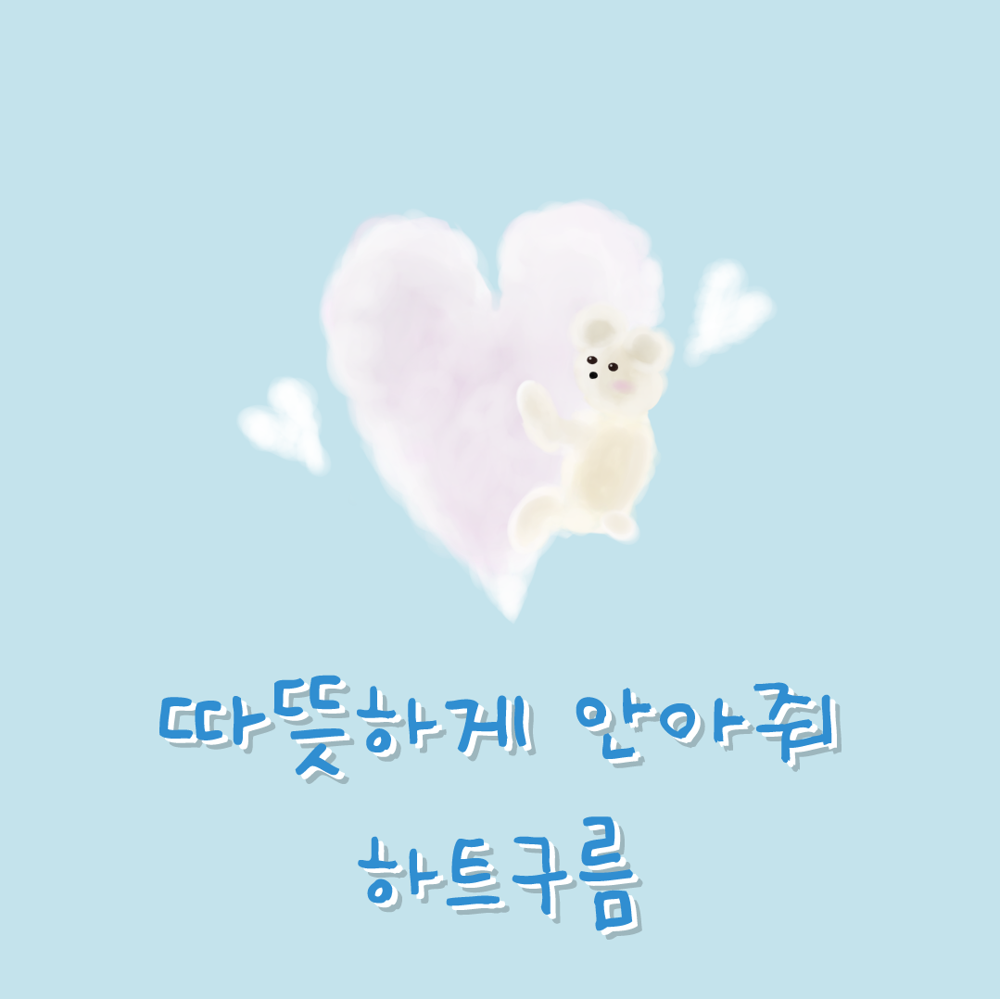

따뜻한 하트 구름을 선물로 받으셨네요!
요즘 당신이 사랑하는 존재와의 시간을
어떻게 보내고 계신가요?
소중한 당신 곁에는 당신을 사랑하는 존재들이
당신과 함께하며 행복해 하고 있을 거예요!
오늘은 혼자 있지 말고 가족이나 친구, 반려 동물 등
사랑하는 존재와 따뜻하고 편안한 시간을
보내시는 건 어떨까요?
요즘 당신이 사랑하는 존재와의 시간을
어떻게 보내고 계신가요?
소중한 당신 곁에는 당신을 사랑하는 존재들이
당신과 함께하며 행복해 하고 있을 거예요!
오늘은 혼자 있지 말고 가족이나 친구, 반려 동물 등
사랑하는 존재와 따뜻하고 편안한 시간을
보내시는 건 어떨까요?
따뜻한 시간을 만드는 방법이 궁금하다면?
아래의 영상으로!
아래의 영상으로!